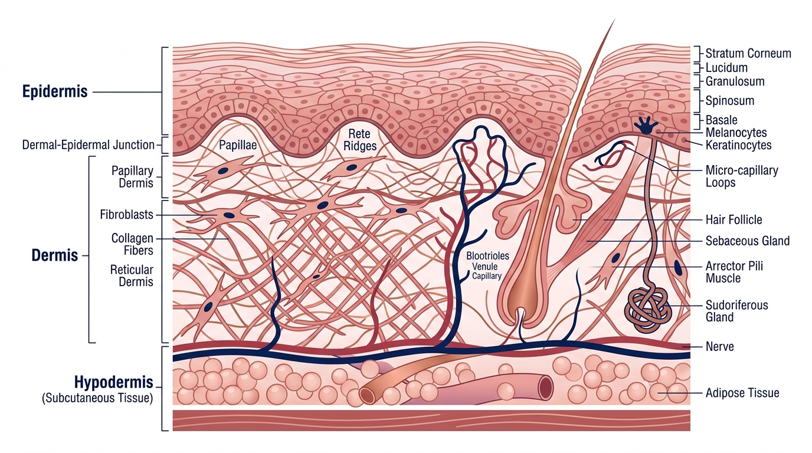

Sarah Jenkins (48, an interior architectural designer from Scottsdale, Arizona) was exhausted by the empty promises of the cosmetic skincare industry.
By her mid-forties, Sarah noticed changes in her skin that no cream seemed able to stop:
- Her skin was becoming paper-thin, losing its bounce and firm cushion.
- Deep expression lines around her eyes and mouth were setting in permanently.
- Her neck, décolletage, and hands looked visibly weathered despite religious sunscreen use.
Over five years, she tried everything: $400-a-jar luxury peptide creams, prescription retinoids that left her peeling, fractional lasers, and daily scoops of marine collagen powder.
"The lasers gave me a temporary glow for two weeks, and the creams made my skin feel soft on the surface," Sarah admits. "But underneath, the structural collapse continued. My skin was losing its cellular thickness and snap."
During a consultation with a leading cellular longevity researcher, she learned the scientific reason why:
The stratum corneum (the skin's protective outer barrier) prevents 99% of large molecules from penetrating into the dermis—while stomach acid breaks down oral collagen powders into generic amino acids before they ever reach your skin cells.
The Anatomy of Cellular Aging: Inflammaging & Fibroblast Dormancy
Human skin is held up by a three-dimensional scaffolding called the Extracellular Matrix (ECM).
Starting at age 30, dermal fibroblasts lose their upstream peptide signaling and reduce new collagen production by 1% to 1.5% per year. Simultaneously, chronic micro-inflammation ("inflammaging") activates collagenase enzymes that destroy existing collagen fibers faster than your body can rebuild them.

Sarah's 6-Week Documented Dermal Transformation
| DERMATOLOGICAL PARAMETER | BASELINE (DAY 1) | WEEK 6 RESULTS |
|---|---|---|
| Dermal Thickness (Ultrasound) | 0.8 mm (Thin / Depleted) | 1.2 mm (+32% Density) |
| Wrinkle Depth Score (0 to 10) | 7.0 / 10 (Severe) | 2.0 / 10 (Softened & Filled) |
| Skin Elasticity Snap-Back | 3.2 Seconds (Sluggish) | 0.8 Seconds (Youthful Snap) |
| Facial Redness & Erythema | Elevated (Chronic) | Normalized (Calm Glow) |
| Hair Follicle Shedding | High Shedding Rate | -65% Reduction in Shed |
Frequently Asked Questions
Q: Will this also help with thinning hair or brittle nails?
A: Yes. GHK-Cu and BPC-157 stimulate blood flow to the hair follicle dermal papilla, enlarging miniaturized follicles and boosting keratin synthesis for thicker hair and stronger nails.
Q: How is this different from taking GHK-Cu alone?
A: GHK-Cu stimulates collagen synthesis, but without KPV to extinguish inflammation and BPC-157/TB-500 to build new micro-capillaries and repair fascia, newly synthesized collagen is quickly broken down. The 4 peptides work in unbreakable biological synergy.
60-Day Dermal Transformation Guarantee
If you do not experience a dramatic increase in dermal thickness, elasticity, youthful radiance, and visible wrinkle reduction within 60 days, your protocol is 100% refundable. No questions asked.
Discover Your Skin's True Regenerative Potential
Take the 2-minute diagnostic skin self-assessment below to check your qualification for the physician-guided KLOW protocol.